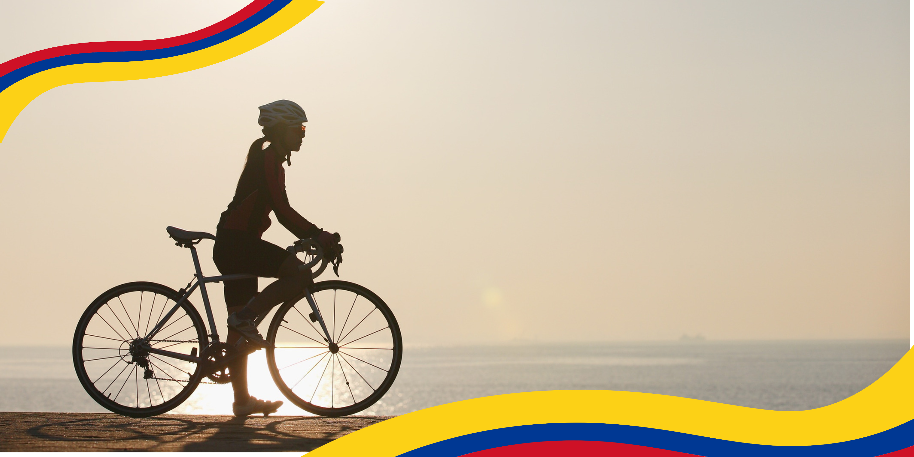

El mejor espacio para conseguir alquiler de bicicletas de alta calidad en el área metropolitana

Somo una empresa Colombiana que busca mejorar el sistema de movilidad del área metropolitana por medio del alquiler de bicicletas.
Contamos con gran variedad de bicicletas y de distintos deportes para que puedas moverte de la forma que mas te guste.
Correo electronico hola@ruedalibre.example
Contamos con bicicletas de ciudad, MTB, BMX. Todas estas cuentan con candado y casco.
Se programan semanalmente recorridos por partes del valle de aburra y sus alrededores, lo que permite viajar y disfrutar del deporte que tanto amamos.
Contamos con alianzas con Comfama y Inder para el apoyo de estas actividades.
En este mes de octubre haremos la ruta del cerro del volador con disfraces!
}